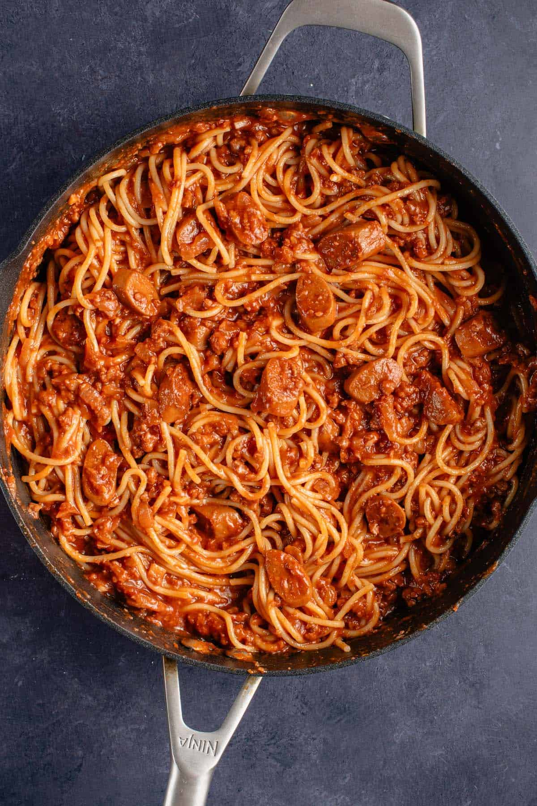

Spaghetti

Pinoy style Spaghetti
Pinoy Style Spaghetti is a popular Filipino version of the classic Italian pasta dish, featuring a sweet and savory tomato-based sauce combined
with ground meat, hotdogs,and bell peppers. It is often characterized by its unique blend of flavors, with the sweetness of the sauce balanced
by the savory elements of the meat and the slight tanginess of the tomatoes. Pinoy Style Spaghetti is a favorite comfort food in the Philippines
and is commonly served at parties, gatherings, and family dinners. It's a comforting and satisfying dish that appeals to both kids and adults alike.
Ingredients:
- Spaghetti noodles
- Ground beef
- Tomato sauce
- Tomato paste
- Garlic (minced)
- Onions (chopped)
- Bell peppers (red and green, chopped)
- Hotdogs (sliced)
- Cheese (grated, for topping)
- sugar
Steps:
-
Cook the spaghetti noodles:
- Bring a large pot of salted water to a boil. Add the spaghetti noodles and cook according to package instructions until al dente.
Drain and set aside.
-
Prepare the meat sauce:
- In a large skillet or pot, heat some cooking oil over medium heat. Add minced garlic and chopped onions,
and sauté until softened and fragrant.
- Add the ground beef to the skillet and cook until browned, breaking it apart with a spoon as it cooks.
- Once the beef is browned, add the sliced hotdogs and chopped bell peppers to the skillet,
and continue to cook for a few minutes until the vegetables are slightly softened.
- Stir in the tomato sauce and tomato paste, and season with sugar to taste. Simmer the sauce for about 15-20 minutes,
stirring occasionally, to allow the flavors to meld together and the sauce to thicken.
-
Combine the spaghetti and sauce:
- Once the sauce is ready, add the cooked spaghetti noodles to the skillet with the sauce. Toss everything together until the
noodles are evenly coated with the sauce.
-
Serve:
- Transfer the Pinoy-style spaghetti to serving plates or bowls.
- Sprinkle grated cheese on top of each serving.
Serve hot and enjoy!
Enjoy eating your Spaghetti!
To go back to the homepage with list of foods, click Homepage.
Other food with recipes: